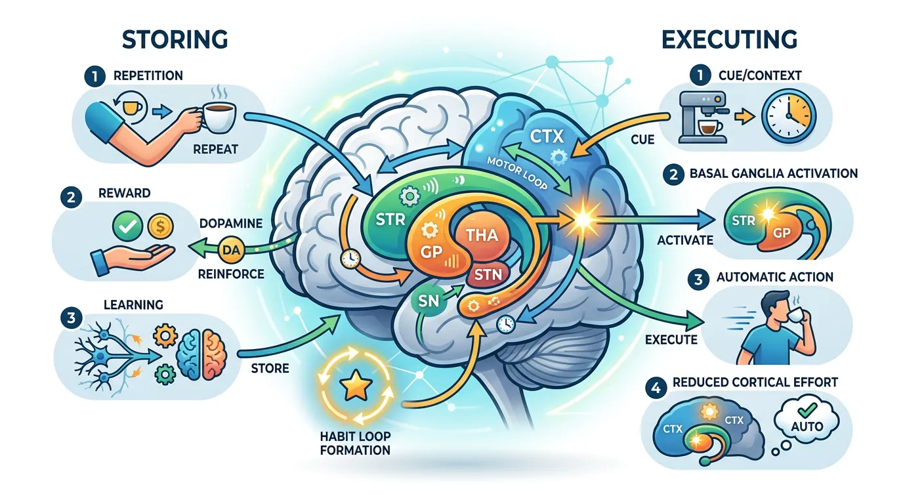
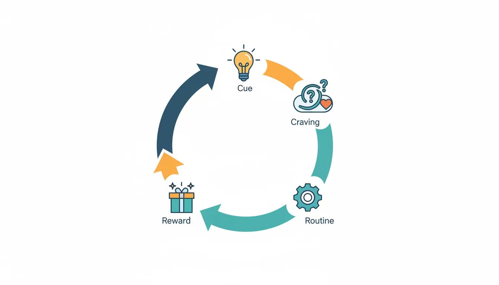
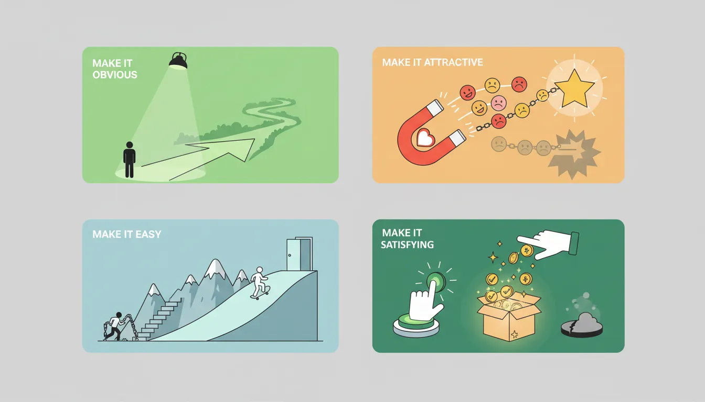
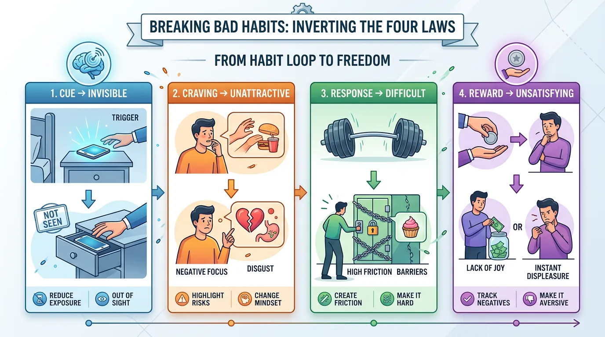
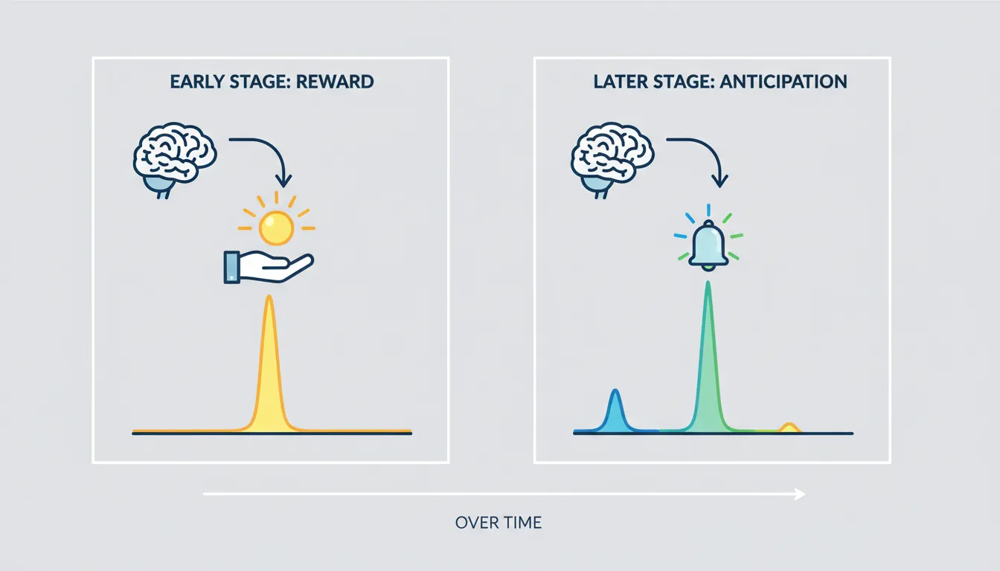

What Habits Really Are
Habits are automatic behaviors stored in the basal ganglia. In this second part of our comprehensive 11-part series, we'll explore how habits form, persist, and change.

Key Insight
Habits are not about motivation—they're about repeated loops that become automatic through consistent practice.
Behavioral Psychology Mastery
Foundations of Behavior
Core principles, conditioning, behavioral loopHabit Formation & Breaking
Habit loops, building & breaking habitsDecision-Making Psychology
Biases, dual-system thinking, behavioral economicsMotivation & Drive
Intrinsic vs extrinsic, theories, goal psychologyNudge Theory & Choice Architecture
Defaults, framing, behavioral designBehavior Change Models
COM-B, Fogg, transtheoretical modelSocial Influence & Persuasion
Conformity, authority, Cialdini's principlesPractical Applications
Personal, workplace, business, healthBehavioral Neuroscience Basics
Dopamine, stress, habit circuitryBehavioral Research Methods
Experiments, RCTs, field studiesApplied Behavioral Therapy
CBT, exposure therapy, reinforcementThe Habit Loop Framework
Cue → Routine → Reward
- Cue - The trigger that initiates the behavior
- Routine - The behavior itself (good or bad)
- Reward - The benefit that reinforces the loop
- Craving - The anticipation that powers the cycle
Charles Duhigg popularized the habit loop in "The Power of Habit," but the science goes back to behaviorist research. Understanding this loop is essential because habits cannot be deleted—only modified.

The Golden Rule of Habit Change
"You can't extinguish a bad habit, you can only change it. Keep the same cue, provide the same reward, but insert a new routine."
Dissecting the Loop
Example: Afternoon Coffee Habit
| Component | What It Is | Hidden Driver |
|---|---|---|
| Cue | 3:00 PM, energy slump | Time of day + physical sensation |
| Craving | Want energy boost | Actually might want: break, social contact, or stimulation |
| Routine | Walk to café, buy coffee | The visible behavior |
| Reward | Caffeine, warmth, break | Multiple rewards bundled together |
Key insight: To change this habit, first identify which reward you truly crave. If it's social connection, coffee isn't the answer—a walking meeting might work better.
Building Habits That Stick
James Clear's "Atomic Habits" framework provides the most practical system for building new habits. It's based on making small changes across all four stages of the habit loop.

The Four Laws of Behavior Change
| Law | Principle | Application |
|---|---|---|
| 1st Law | Make it obvious | Design your environment, use implementation intentions |
| 2nd Law | Make it attractive | Temptation bundling, join a group where behavior is normal |
| 3rd Law | Make it easy | Reduce friction, prime environment, 2-minute rule |
| 4th Law | Make it satisfying | Immediate rewards, habit tracking, never miss twice |
Technique 1: Implementation Intentions
Research shows that specifying when, where, and how you'll perform a behavior doubles your chances of following through.
Formula
"I will [BEHAVIOR] at [TIME] in [LOCATION]."
Example: "I will meditate for 5 minutes at 7:00 AM in my living room chair."
Technique 2: Habit Stacking
Link a new habit to an existing one. Your current habits are already wired into your brain—use them as triggers.
Formula
"After [CURRENT HABIT], I will [NEW HABIT]."
- "After I pour my morning coffee, I will write one thing I'm grateful for."
- "After I sit down at my desk, I will write my top three priorities."
- "After I put on my running shoes, I will go outside (even for 2 minutes)."
Technique 3: Environment Design
Your environment is the invisible hand shaping your behavior. Design it to make good habits easy and bad habits hard.
Environment Design Examples
| Goal | Environment Change |
|---|---|
| Eat healthier | Put fruit on counter, hide snacks in high cabinet |
| Exercise more | Sleep in workout clothes, put shoes by door |
| Read more | Put book on pillow, remove TV from bedroom |
| Less phone use | Charge phone in another room |
| Drink more water | Fill water bottle every night, keep on desk |
Technique 4: The Two-Minute Rule
When starting a new habit, scale it down to just two minutes. The goal is to standardize before you optimize.
Two-Minute Versions
| Desired Habit | Two-Minute Version |
|---|---|
| Run 5 miles | Put on running shoes |
| Study for exams | Open notes and read one page |
| Meditate 20 minutes | Sit in meditation position for 2 minutes |
| Write a book | Write one sentence |
| Do 30 push-ups | Do one push-up |
Why it works: The hardest part is starting. Once you've started, continuing is easier. You're building the identity of someone who exercises, studies, or meditates.
Why Habits Fail
Most habit attempts fail not from lack of motivation, but from predictable errors in design.
Common Habit Failures
| Failure Mode | Example | Fix |
|---|---|---|
| Too big | "I'll exercise 1 hour daily" | Start with 5 minutes |
| Too vague | "I'll eat healthier" | Specify: "I'll eat vegetables at dinner" |
| No cue | "I'll meditate sometime" | Link to specific trigger: "After breakfast" |
| Relying on motivation | "I'll do it when I feel like it" | Design environment so you don't need motivation |
| All-or-nothing thinking | "I missed one day, I failed" | Never miss twice rule |
Breaking Bad Habits
To break bad habits, invert the Four Laws: make the cue invisible, the craving unattractive, the response difficult, and the reward unsatisfying.

Inversion: How to Break Bad Habits
| Inverted Law | Principle | Application |
|---|---|---|
| Inversion of 1st | Make it invisible | Remove cues from environment |
| Inversion of 2nd | Make it unattractive | Reframe the benefits, highlight costs |
| Inversion of 3rd | Make it difficult | Add friction, use commitment devices |
| Inversion of 4th | Make it unsatisfying | Create accountability, make costs immediate |
Strategy: The Habit Substitution
Remember: habits can't be deleted, only changed. Replace the routine while keeping the cue and reward.
Example: Quitting Smoking
- Cue: Stress at work (keep this)
- Old Routine: Smoke a cigarette → New Routine: Take a 5-minute walk, chew nicotine gum
- Reward: Relaxation, break from work (keep this)
Commitment Devices
A commitment device locks you into future behavior, removing the option to choose poorly in the moment of temptation.
Commitment Device Examples
- Financial: Give $100 to a friend; they donate it to a cause you hate if you fail
- Social: Publicly announce your goal (social pressure)
- Physical: Remove all junk food from house; don't carry credit cards to avoid impulse purchases
- Technological: Use website blockers, app time limits, phone lockboxes
Neuroscience of Habit Change
Habits are stored in the basal ganglia, a primitive part of the brain that handles automatic routines. This is why habits feel effortless—and why they're hard to break.

The Chunking Process
When you first learn to drive, every action requires conscious thought. Over time, the basal ganglia "chunks" the sequence into a single automatic unit. This frees up the prefrontal cortex for other tasks.
Implication: Once a habit is chunked, it runs automatically. You can't "unlearn" it—you can only build a stronger competing habit.
Dopamine and Habits
Dopamine isn't just about pleasure—it's about anticipation. The dopamine spike happens when you expect the reward, not when you receive it.
Dopamine Timing
Before habit is learned: Dopamine spikes when reward is received
After habit is learned: Dopamine spikes at the cue (anticipation of reward)
If reward is withheld: Dopamine crashes below baseline (disappointment)
This explains why habits are so powerful: the cue itself becomes rewarding. Seeing your phone triggers a dopamine hit before you even check it.
Habit Systems
Rather than focusing on goals, focus on systems—the processes that lead to results.
Goals vs. Systems
- Goal: "Lose 20 pounds" → System: "Cook healthy meals and walk 30 min daily"
- Goal: "Write a book" → System: "Write 500 words every morning"
- Goal: "Learn Spanish" → System: "Practice with Duolingo for 10 min after breakfast"
Goals are about results. Systems are about the processes. You do not rise to the level of your goals—you fall to the level of your systems.
Identity-Based Habits
The most powerful form of habit change is identity change. Instead of focusing on what you want to achieve, focus on who you want to become.
Outcome vs. Identity
| Outcome-Based | Identity-Based |
|---|---|
| "I want to quit smoking" | "I am a non-smoker" |
| "I want to lose weight" | "I am a healthy person" |
| "I want to read more" | "I am a reader" |
| "I want to exercise" | "I am an athlete" |
Every action you take is a vote for the type of person you wish to become. The goal isn't to read a book; the goal is to become a reader.
Practical Exercise: Habit Scorecard
Try This
- List your daily habits from waking to sleeping
- Mark each as + (positive), - (negative), or = (neutral)
- Identify one - habit to change and one + habit to strengthen
- Apply the techniques from this guide to each
Conclusion & Next Steps
You've now learned the science and practice of habit change:
- The habit loop (cue → craving → routine → reward) is the engine of automatic behavior
- Build good habits by making them obvious, attractive, easy, and satisfying
- Break bad habits by inverting these laws
- Focus on systems and identity, not just goals
- Use environment design, habit stacking, and the two-minute rule
Habits are the compound interest of self-improvement. Getting 1% better every day leads to remarkable results over time.